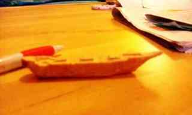
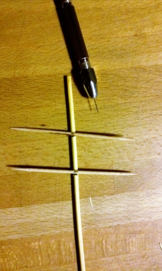
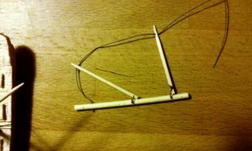

Ach nee, die lieben… Ich habe kürzlich von R., S. und H. eine schöne Fläche Whisky geschenkt bekommen, der auch wirklich sehr lecker ist. Überreicht wurde mit die Flasche mit der Maßgabe, da sollte ein Buddelschiff rein, und zwar nicht so’n lüttes, sondern ein Dreimaster! Kann doch nicht so schwer sein – wird ja ganz klein.

Dann kann das Schiff ja eigentlich nur die Rickmer Rickmers werden, denn die passt perfekt: sie wurde gebaut in Bremerhaven und hat nach einigem herumfahren jetzt einen festen Platz in Hamburg. Es ist ein sogenanntes Dreimast-Vollschiff und die technischen Zeichnungen von der zugehörigen Museumsseite sind hoffentlich eine Hilfe.
Ich baue jetzt erstmal einen Prototypen und übe ein bisschen: mit einer Laubsäge habe ich einen Rumpf aus Balsaholz gesägt, in der Hoffnung, dass man es gut formen kann, weil es so weich ist. Für meinen Geschmack sogar etwas zu weich, weil beim Versuch daran herum zu schnitzen leicht Risse in der Oberfläche entstehen und das Ganze etwas roh wirkt. Also werde ich für den richtigen Rumpf wohl doch kein Balsa nehmen.
{kind=link}

Am Hauptmast hängen die Rahen als Querbalken und daran werden dann letztlich die Segel befestigt. Ich gebe mir noch keine große Mühe, das Holz zu formen oder die Zahnstocher auf die richtige Länge zu bringen - ich nehm’s einfach wie es kommt.
{kind=link}

Am hinteren Mast (dem Besan) wollte ich gerne einen Gaffel (der obere schräge Balken) und einen Baum (der untere waagerechte Balken) haben, weil das die Rickmer Rickmers auch hat.
{kind=link}

Man kann gut die weiteren Löcher im Mast erkennen, mit denen er einerseits am Schiffsrumpf befestigt werden wird und andererseits aufgerichtet werden kann. Der Faden, mit dem der Gaffel und der Baum in Position gehalten werden, ist schon dran.
Um die Zanhstocher hin- und herklappen zu können, muss die Schlaufe etwas Spiel haben, was dann später dazu führt, dass die beiden Teile neben dem Mast hängen - das sollte noch besser werden. Durch das Loch ganz am rechten Ende wird ein Draht gezogen, an dem der Mast auf dem Schiffsrumpf hin- und herklappen kann.
Im nächsten Eintrag befestige ich dann die Masten und das stehende Gut (die Seile für die Masten und die Balken) am Schiff.